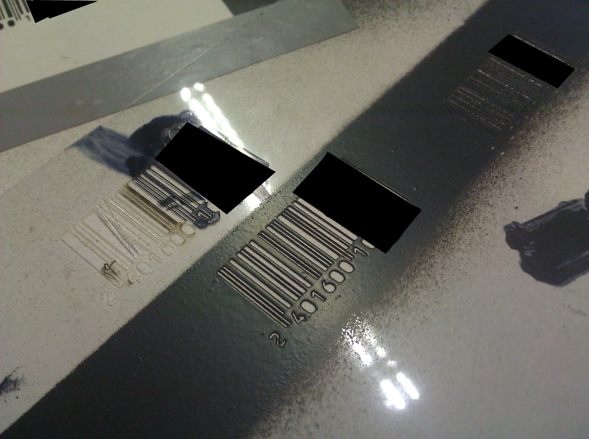
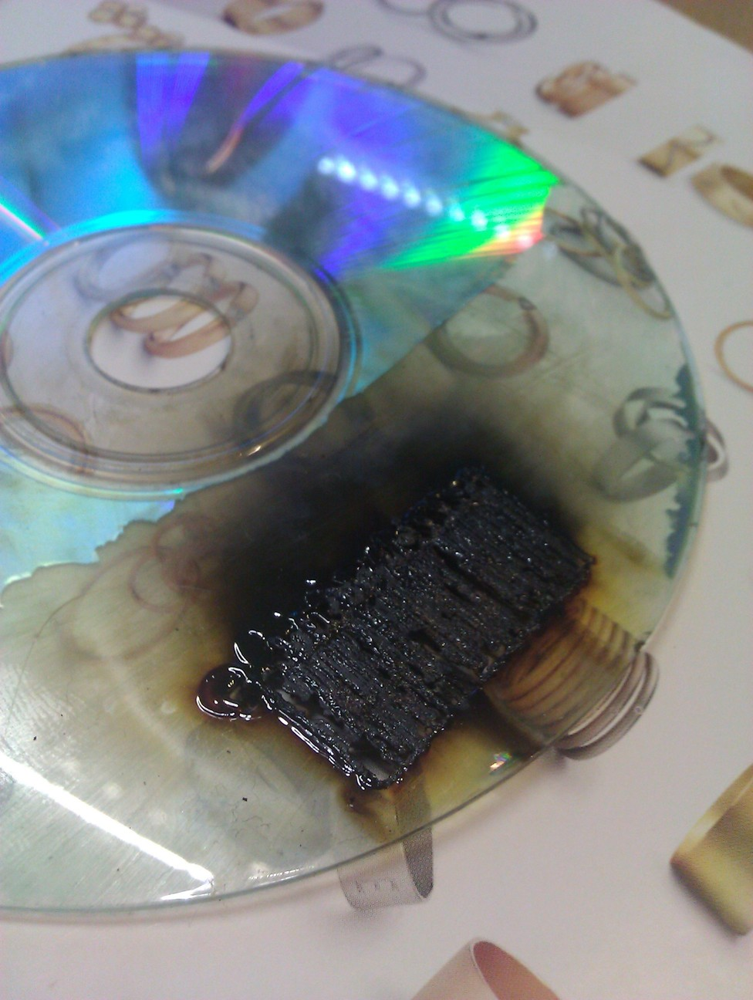

Introduction
We were looking for a way to share our payback card, unfortunately we didn't have a card printer like this one because we didn't have a spare 900€ to buy one.
This is the writeup of how you too can create your own payback cards with nothing more than:
- a Lasercutter
- some old paper-stickers
- a bunch of Payback cards
- some fine sandpaper
- spray paint
Step by Step
-
Register a payback card. You can use the terminals at local supermarkets (e.g. REWE) to register the card without having to provide an email address. There is no backchecking of the provided name or email address. The card is immediatly ready to go.
-
Generate the EAN-13 Barcode of the card you just registered. We used this page http://barcode.tec-it.com/barcode-generator.aspx . Load the Barcode.png file into Inkscape and generate a .svg from it.
-
Crop the top of the generated barcode to the right ratio and resize the barcode.
-
Laser the .svg file into the paper sticker. We achieved better results using the "scan" mode of the laser. The finer your laser works, the better the result will be. Try not to set your laser on fire.
-
Use the sandpaper to remove the Barcode from the unregistered Payback cards. Try not to harm the rest of the print. With water and a sponge it is easy to remove the grey shadows left by the sandpaper. We recommend you use the finest sand paper you can find (we only had 240 paper unfortunately). Finer paper will prevent the varnish to run into the scratches.
-
Stick the stencil onto the card. Try to match the position of the original Barcode.
-
Use spray paint to give the card its barcode. Wait a few seconds till the paint started to dry, than remove the sticker.
-
[BONUS] Transfer the magnetic-stripe data onto the other card. We have yet to see a shop which uses the magnet stripe but we did it nonetheless. We used a cheap MSR605 magnet-stripe writer without any issues.
-
[Double Bonus] To protect the code you should finish the card with clear varnish. We had none ready so this is a to-do for us.
-
You are done!
Trivia
The first thing we tried is to create a stencil with a overhead projector foil and the laser cutter. After a few tries the stencil looked very promising:  Unfortunately due to the capilary effect we were not able to create a clean print.
We also tried to create a stencil from a cd-rom to have a harder stencil to work with, it turned out to not be the best idea ... 